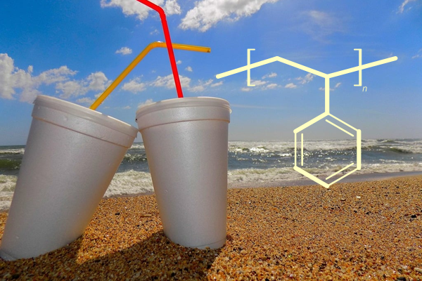

Module 3 Conventional Radical Polymerization

1. Link to the simulator
2 Module objectives
- Predict how would the polymerization result change when the reaction condition of a radical polymerization is varied.
- Explain the reason of the change.
3. Classroom implementation ideas
Perform the following simulations and answer the questions.
First, set the default condition as: MA, bulk, AIBN 0.005 mol/L, 60 \(^\circ\)C, 1 h, and run the simulation. Then change one parameter at a time, run the simulation again, and compare to the results from the default condition.
I. Different monomer (MA vs VAc, same molar mass, VAc has smaller \(k_p\))
II. Different monomer concentrations (bulk vs 50%)
III. Different initiator (AIBN vs ACHN) (ACHN decomposition is much slower)
IV. Different initiator concentrations (0.005 vs 0.01 mol/L)
V. Different temperatures (60 \(^\circ\)C vs 80 \(^\circ\)C)
For every single reaction answer this question:
- Compare the number of polymers obtained from the polymerization and the number of initiator consumption
A. much greater; B. comparable (ratio within 0.5 to 2 and keep constant); C. much less
For each pair of reactions answer the following questions (the second reaction compare to the first reaction).
Radical concentration
A. increase; B. similar; C. decrease; D. need more information to tellRate of polymerization (i.e. percent consumption of monomers vs time)
A. increase; B. similar; C. decrease; D. need more information to tellReason for the change in polymerization rate (the answer could be one or both of the choices)
A. change in radical concentration; B. change in \(k_p\)Explain your choices for the above two questions.
Initial molecular weight
A. increase; B. similar; C. decrease; D. need more information to tellReason for the change in initial molecular weight (the answer could be one or multiple of the choices)
A. rate of monomer consumption; B. monomer concentration; C. number of polymers being formed.Explain your choices for the above two questions.
4. Example practice questions
- In a conventional radical polymerization, adding more thermal initiator, e.g., AIBN, and keeping all other reaction conditions not changed, what would happen to the product?
- More polymers will be produced at the same reaction time.
- Higher monomer conversion is expected at the same reaction time.
- Lager average molecular weight is expected.
- Higher radical concentration is expected at the same reaction time.
- In a conventional radical polymerization, change the initial monomer concentration from 8 mol/L to 4 mol/L (by changing the ratio between the monomer and inert solvent) and keep all other reaction conditions not changed, what would happen to the product?
- Fewer polymers will be produced at the same reaction time.
- Lower monomer conversion is expected at the same reaction time.
- Lower average molecular weight is expected.
- Lower radical concentration is expected at the same reaction time.
Copyright
Copyright(C) 2022 – 2024 Yu Wang

This webpage is licensed under a Creative Commons Attribution 4.0 International License.